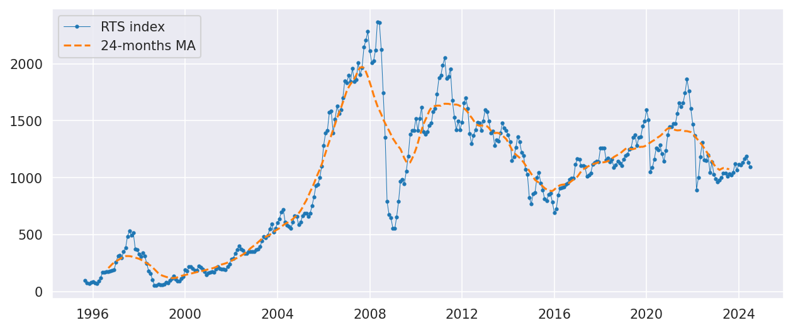
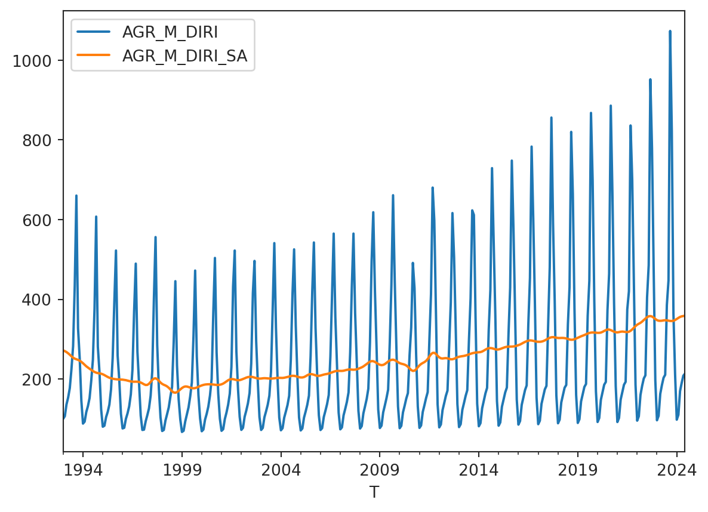
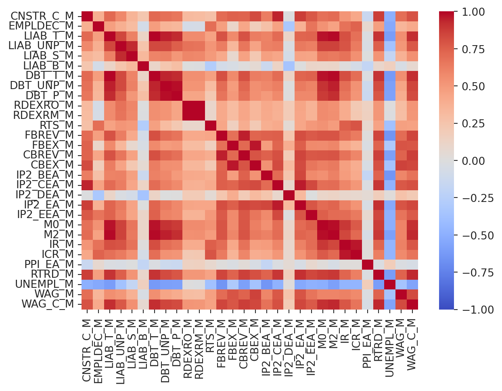

The article introduces a Python library called sophisthse that provides access to Russian macroeconomic statistics time series published by the National Research University Higher School of Economics (HSE). The library aims to simplify the process of working with Russian macroeconomic data and facilitate the analysis of economic trends in the country. The article demonstrates how to use the library to list available time series, download data, and visualize the time series data.

Acknowledgments
The library is a port of the sophisthse R package developed by Boris Demeshev. The original package provides similar functionality for working with Russian macroeconomic data in R. The Python version of the library is designed to offer the same features to Python users interested in analyzing Russian economic indicators.
Source Data
The sophist.hse.ru website contains wide range of Russian macroeconomic statistics time series, including data on GDP, inflation, unemployment, industrial production, retail sales, and more. The data is originally sourced from the Federal State Statistics Service of the Russian Federation (Rosstat) and other official sources.
Features
The sophisthse library provides the following features:
Listing available tables with time series data
Downloading and caching time series data
Installation
You can install the library using pip:
pip install sophisthse
Usage
Here is an example of how to use the library to download and plot the time series data.
List Available Time Series
Time series are published on the sophist.hse.ru website. Initializing sophisthse class will download the list of available tables. You can list the available tables using the list_tables method:
from sophisthse import sophisthsesph = sophisthse()tables = sph.list_tables()tables
date
name
0
2020-05-27 15:46:00
AGR_M_I - Copy
1
2024-08-08 09:10:00
AGR_M_I
2
2024-08-08 09:10:00
AGR_Q_I
3
2024-02-11 19:10:00
AGR_Y_DIRI
4
2024-07-26 20:04:00
APCI3N
...
...
...
284
2010-03-29 12:57:00
vrp
285
2010-03-30 12:41:00
vrp_r
286
2024-08-08 09:12:00
WAG_M
287
2024-06-07 15:03:00
WAG_Q
288
2024-03-13 19:36:00
WAG_Y
289 rows × 2 columns
The column named date contains timestamp of the latest update. The dates in this column hint that some tables may be out of date. Let’s take a look at the date of the latest update of the tables.
According to the sophist.hse.ru website table AGR_M_I provides the index of real agricultural production in column AGR_M_DIRI, and seasonally adjusted one in the AGR_M_DIRI_SA. Let’s download it and take a look at the data.
agr_m_i = sph.get_table("AGR_M_I")agr_m_i.tail()
AGR_M_DIRI
AGR_M_DIRI_SA
T
2024-02
110.0
353.3
2024-03
169.6
355.7
2024-04
190.3
357.2
2024-05
208.4
358.0
2024-06
213.2
358.5
Note
After calling get_table, the data is cached locally. The next time get_table is called, the data will be loaded from the cache. However, if the table is updated on the server, which is checked when the sophisthse class is initialized, the new data will be loaded from the website.
The method returns a pandas DataFrame, so we can plot the data using the plot method.
agr_m_i.plot()

Additional Example
According to the sophist.hse.ru website table FINMAR_M contains data on the financial market.
finmar = sph.get_table("FINMAR_M")finmar.tail()
RDEXRO_M
RDEXRM_M
RTS_M
IB_M
GKO_M
DEP_M
CR_M
T
2024-03
92.37
92.35
1131.21
NaN
NaN
NaN
NaN
2024-04
91.78
93.05
1165.23
NaN
NaN
NaN
NaN
2024-05
89.79
90.05
1185.57
NaN
NaN
NaN
NaN
2024-06
85.75
85.75
1134.30
NaN
NaN
NaN
NaN
2024-07
86.33
86.11
1092.61
NaN
NaN
NaN
NaN
The first columns are:
RDEXRO_M - Official exchange rate of the ruble against the US dollar.
RDEXRM_M - Exchange rate of the US dollar on the Moscow Exchange.
The heatmap shows that the data in the IB_M, GKO_M, DEP_M, and CR_M columns is not available for the recent years, while the RDEXRO_M, RDEXRM_M, and RTS_M columns have complete data.
Let’s plot the RTS_M column. Due to the economic fluctuations, the RTS index has a lot of volatility. We will add the moving average to the plot.
Looking at the tables, one can assume that the suffixes _M, _Q and _Y in the names mean that the data was sampled monthly, quarterly and annually, respectively. Let’s check this assumption.
The bar plot shows that the assumption is partially correct. There are tables with unknown sampling frequency. This information can be drawn from the actual series after downloading data. It’s not necessary for demonstrative purposes, so we will skip this step.
Let’s calculate the correlation matrix for the monthly data.
from time import sleepfrom random import randintimport pandas as pdmonthly_tables = tables.query("period == 'month' & year >= 2023")df = pd.DataFrame(index=pd.period_range(start="2014-01-01", end="2025-01-01", freq="M"))for table in monthly_tables["name"]: df_add = sph.get_table(table)# We don't want to overload the server# sleep(randint(1, 3)) df = df.merge(df_add, left_index=True, right_index=True)# We do not want to deal with NaNs, at least at this time :)df = df.dropna(how="any", axis=1)# Keep only columns with "_M" suffix to skip derived columnscolumns = [col for col in df.columns if col.endswith("_M")]corr = df[columns].corr()sns.heatmap( corr, vmin=-1.0, vmax=1.0, xticklabels=corr.columns.values, # type: ignore yticklabels=corr.columns.values, # type: ignore cmap="coolwarm",)

The last column (or row) is the WAG_C_M. This is a monthly series of the average nominal wage. It correlates with many economics indicators, and it worth noting that CBEX_M (Consolidated Budget Expenditures) explains almost 84% of WAG_C_M variability. Let’s take a look at these two series.
The plot shows that the WAG_C_M series follows the CBEX_M series with great accuracy. This is an interesting observation that can be used in further analysis.
Conclusion
The sophisthse library provides a convenient way to access and work with Russian macroeconomic time series data. The library simplifies the process of downloading and caching data, making it easier to analyze economic trends in Russia. The library is a valuable resource for researchers, analysts, and anyone interested in studying the Russian economy.